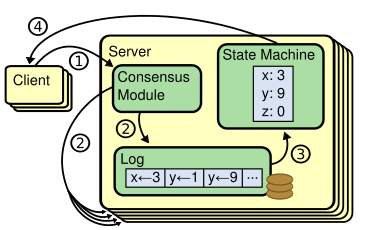

The Raft Consensus Algorithm
You need to a state machine with the following properties:
- Replicated - avoid data loss
- Highly Available - avoid downtime on node failure
- Consistent - for data integrity
- Dynamic - add new or remove nodes as needed
- Simple - to understand, implement and manage
- Performant - obviously
Think of things like:
- Audit logging - durable and secure from host compromise
- Event and command sourcing - persistent record of state changes
- Published Serialization point - once published order is guaranteed
- Consistent distributed systems - run multiple instances in parallel for seamless failover
History
- Work in this area began in the mid 1980's
- Oki and Liskov published "Viewstamped Replication" in 1988
- It was quickly followed by the work of Leslie Lamport who derived a family of consensus algorithms named Paxos, after a fictitious legislative consensus system used on the Greek island of Paxos
- Paxos had an elegant formalism but was relatively complex and difficult to grasp
- In 2013, Ongaro and Ousterhout published the Raft protocol, which aimed to be much simpler.
Raft Overview
- Think of it as a "replicated state machine" cluster
- Client(s) publish append only command logs to the cluster
- One node is considered the leader, while all others are followers
- The leader has complete responsibility for managing the replicated log
- The leader also determines when the log should be considered committed - updating its own and followers' state machines
- Clients only talk to the leader
Replicated State Machine

Note that Raft does not solve the Byzantine Generals problem. It requires the co-operation of all nodes to function
Raft Subproblems
- Leader election - a new leader must be chosen when the existing one fails
- Log replication - leader accepts log entries and replicates them across the cluster
- Safety - if any node has committed a particular log entry then no other node may apply a different command for the same log index
Raft Cluster
- Requires majority of nodes to be functioning
- For example, in a 5 node cluster, 2 nodes can fail and the system can still function
- Raft supports adding or reducing nodes dynamically, allowing maintenance and load sizing as needed
Raft Node
- A node can be in 3 states: "leader", "follower", or "candidate"
- Followers are passive and only respond to requests from leaders or candidates
- If a client attempts to contact a follower it redirects them to the leader
- Raft assumes that leader failure is relatively rare, as the system only makes progress under stable leadership
It is legal because I wish it - Louie XIV
Leader Terms
- Raft divides time into terms of arbitrary length
- Terms are numbered and are continuous and strictly monotonic
- Each term begins with an election in which one or more candidate nodes vie to become leader
- In the case of a split vote, that term ends immediately with no winners and a new election begins for another term
Leader Terms
- Terms serve as a logical clock for the protocol and allow nodes to detect outdated information
- Each node stores its own view of the current term and whenever nodes communicate they exchange term numbers
- If a node receives a term number that is greater than its own it updates its term value to match
Node Communication Protocol
- There are only 2 RPCs in Raft: AppendLog and RequestVote
- AppendLogs are issued by the leader to each follower to ask them to update their logs with the attached log list.
- AppendLog is also used with an empty list as a heartbeat
- RequestVotes are issued by candidates to each follower when an election begings
- RPCs are issued in parallel and are retried indefinately if a response is not received in a timely manner
Leader Election
- All nodes begin life as followers
- They remain followers as long as they receive valid RPCs from leaders or candidates
- If a follower doesn't hear from others for a period of time (the election timeout, they assume the leader is dead
- The follower increments its term number, switches to candidate state, votes for itself and issues RequestVote RPCs to all other nodes
- A candidate remains in this state until it either wins the election, another node establishes itself as leader, or a period of time goes by with no winner
Winning the Election
- When a node receives a RequestVote it votes on a first come, first serve basis for that candidate for that particular term
- If a candidate receives a majority of votes it considers itself leader and issues heartbeats to establish its authority with the other nodes
- By allowing only one vote per term and requiring majority rule, the system guarantees that their is only one leader at a time
A multitude of rulers is not a good thing. Let there be one ruler, one king. - Homer
Losing the Election
- While a candidate node is waiting for votes it can receive an AppendLog RPC from another node
- If the term number of the other node is at least as large as the candidate's term then it goes back to a follower state
- If the term number is smaller the candidate rejects that leader's purported authority and continues waiting for votes
Split Votes
- It's possible for there to be a split vote among candidates where no one wins
- After a certain time, candidates give up and restart another election
- The timeout is randomly selected to minimize the chance of repeated election cycles
This is the basics of leader elections. Raft imposes additional constraints on who can win an election that we will discuss later
Log replication
- The leader receives client requests with contain a command that will be executed upon the state machine
- The leader appends the command to its log and then issues AppendLog RPCs in parallel to the other nodes
- Once a majority of the nodes responds the leader commits the entry and executes the command, returning the result to the client
Log Replication
- The leader continually retries AppendLogs against nodes that have failed to respond, even after it has replied to the client
- Followers learn of committed entries because the leader includes the highest index commited in future AppendLog RPCs
- Once followers commit a log they too execute the command upon their own internal state machines
Log Matching Properties
PROPOSITION 1: If two entries in different logs have the same index and term then they store the same command
Log Matching Properties
- This follows from the fact that each leader is guaranteed to create at most one log entry with a given log index for a given term
- Also logs are never reordered
Log Matching Properties
PROPOSITION 2: If two entries in different logs have the same index and term the the logs are identical in all preceeding entries
Log Matching Properties
- This is guaranteed by a consistency check in AppendLog.
- Leaders include the previous term and log index of the entry that preceeds the new entries.
- Followers will only apply logs if these match its previous as well
- Thus once a follower returns success to an AppendLog the leader knows that the follower's log is identical to its own up through the new entries
Dealing With Inconsistencies
- If leaders crash routinely then it is possible for an inconsistent state to occur when a new leader comes to power
- Followers can be missing logs that the leader has, have additional logs that leader doesn't have or both
- Raft solves this by forcing all the followers' logs to be overriden by the leader's logs
- While by itself this would not guarantee consistent commit order across the nodes, by adding additional restrictions on who can become elected leader this will in fact work
Overwriting Logs
- For each follower the leader maintains a nextIndex property that indicates which log index will be sent next to that particular follower
- When a leader comes into power it sets the last index for all followers to be the one just after the last one in its own log
- When the AppendLog RPC is rejected by a follower because it violates the Log Matching Principle, the leader decrements the nextIndex and retries
- Eventually the Log Matching Principle will be satisfied and the follower's logs are truncated and then extended with the leader's
"Off with their heads!" - The Queen of Hearts
We have seen the basics of Raft. In the next section we'll see some wrinkles
Election Restriction
- Raft only allows candidates who contain all the icommitted entries for previous terms to become leaders
- This is enforced by having candidates provide their latest term and index to voters in the RequestVote RPC
- Voters will reject candidates whose term is either less than theirs or who have a shorter log chain for the current term
- This ensures only candidates with all committed entries can become Il Duce